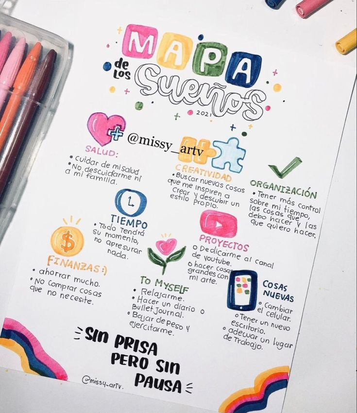
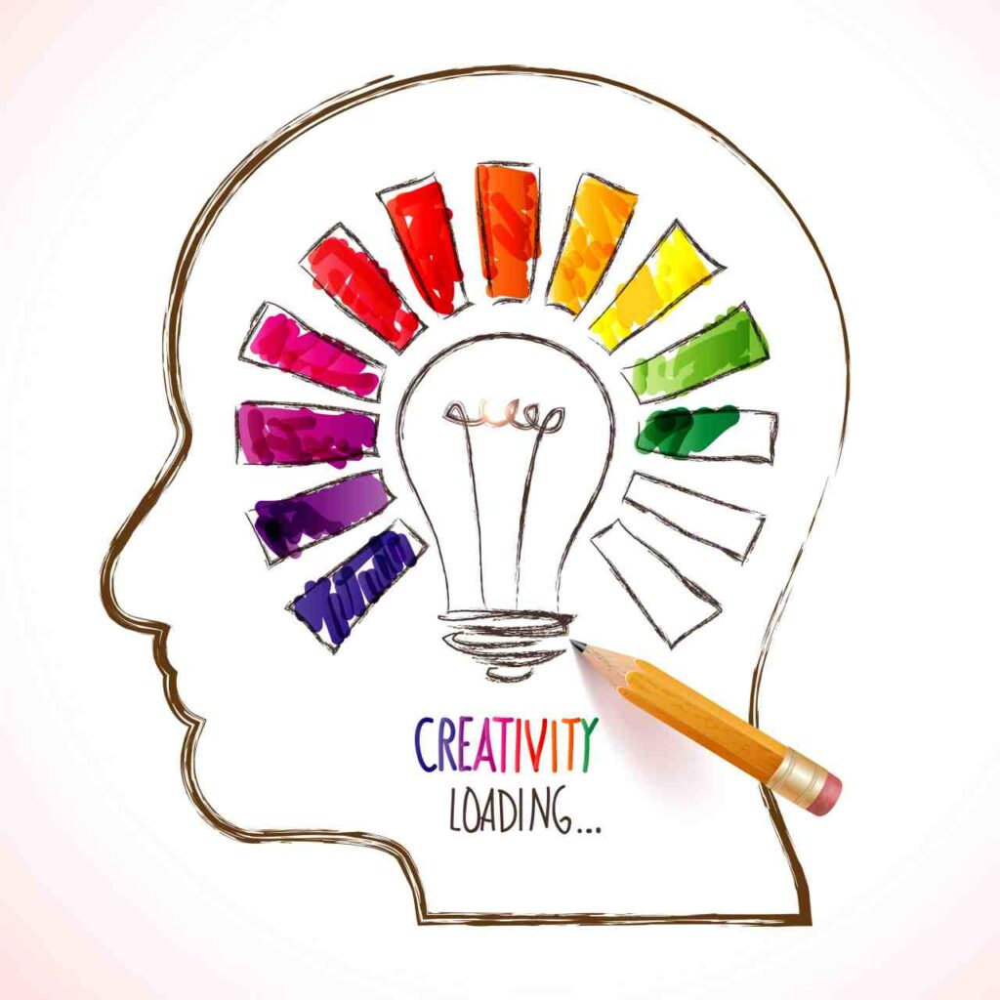
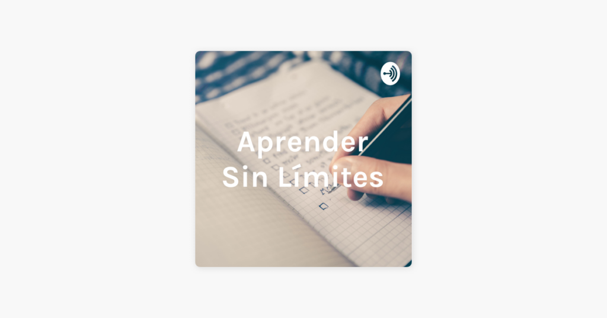
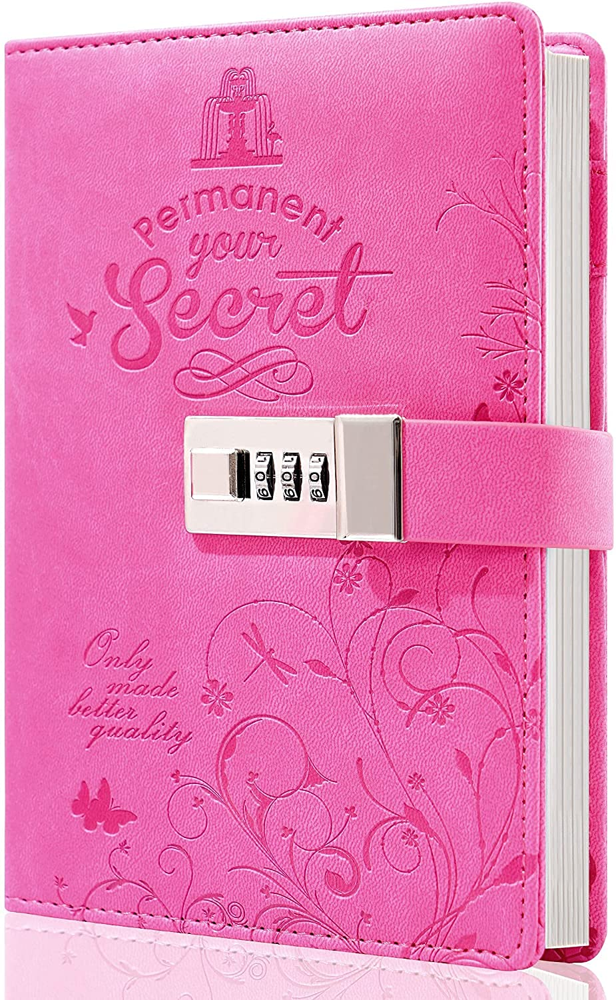
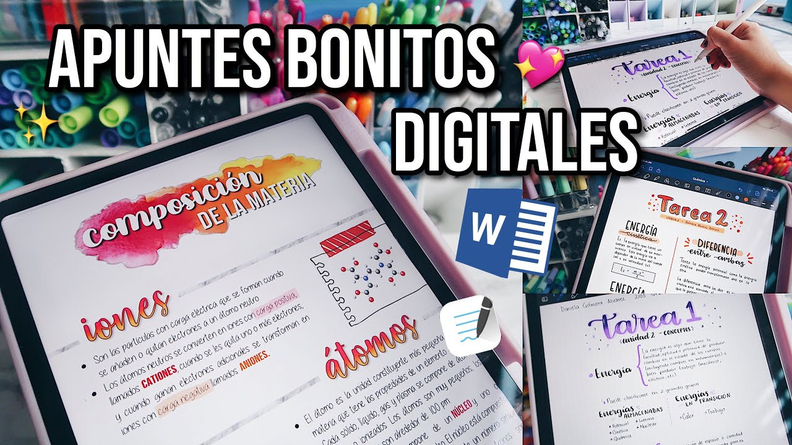
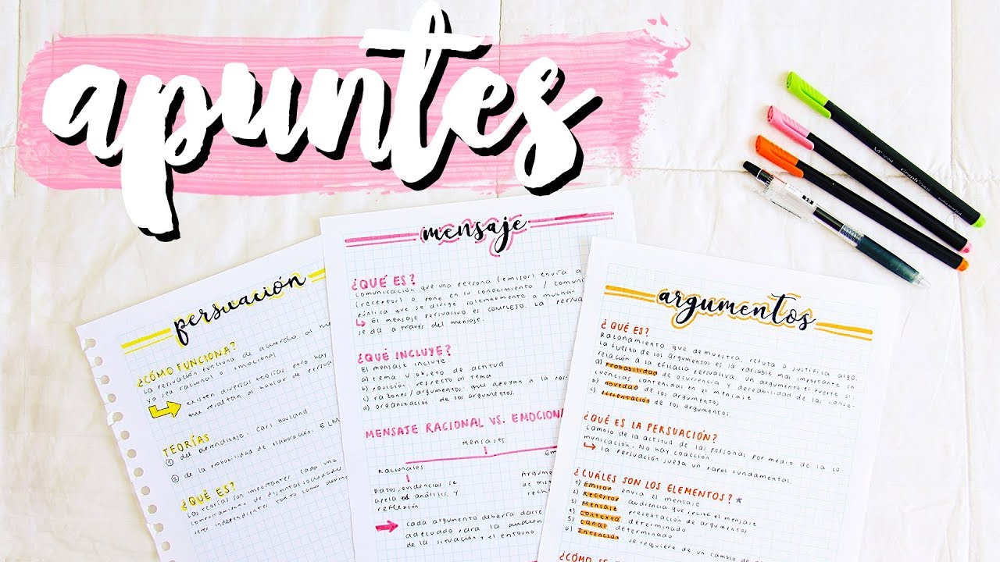
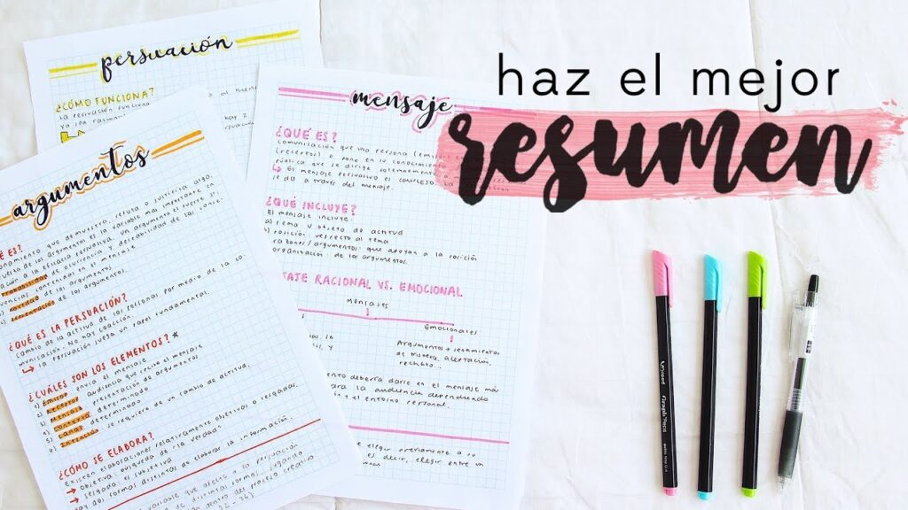

¡Inspírate con estos Apuntes Creativos para tu Próximo Proyecto!

¡Inspírate con estos Apuntes Creativos para tu Próximo Proyecto! ¿En busca de nuevas ideas para tu próximo proyecto? ¿Estás en una encrucijada creativa y no sabes por dónde empezar? ¿Estás
Leer mas...
20 comentarios
50 formas de pensar de manera más creativa

Dado el gran inventario en línea de inspiración e ideas, se esperaría que hoy en día sea más fácil pensar de forma creativa. Desde la adictiva tarea de crear tableros
Leer mas...
20 comentarios
Aprende sin límites con tus apuntes de Instituto

Aprende sin límites con tus apuntes de Instituto Interesante para el Usuario ¿Estás buscando la mejor manera de aprender sin límites y aprovechar al máximo tus apuntes del instituto? Entonces
Leer mas...
20 comentarios
Cómo Crear Apuntes Aesthetic Bonitos para Tu Diario o Libreta

A muchas personas les encanta la idea de tener un diario o libreta para registrar sus pensamientos, ideas y sucesos. El problema es que a veces una libreta simple puede
Leer mas...
20 comentarios
Cómo Crear Apuntes Digitales Bellos y Efectivos

¿Cómo Crear Apuntes Digitales Bellos y Efectivos? ¿Qué son los apuntes digitales? ¿Cómo pueden ayudarnos a aprovechar mejor nuestras horas de estudio? Y, sobre todo, ¿cómo crear apuntes digitales queréis
Leer mas...
20 comentarios
Consejos útiles para sacar el máximo provecho de tus apuntes de colegio

Consejos útiles para sacar el máximo provecho de tus apuntes de colegio Tomar apuntes en el colegio es una excelente manera de asegurarse de que entendemos el material del curso
Leer mas...
20 comentarios
Ideas para Decorar Apuntes de Clase
.jpg)
¡Hola, amantes de los apuntes aesthetic! ¿Estáis listos para darle un giro a vuestros cuadernos? Aprender es más divertido cuando nuestros apuntes se ven geniales. ¡Así que vamos a explorar
Leer mas...
20 comentarios
La Guía Definitiva para Resumir Apuntes

Por:Melanie Mamani
fercha:19 de marzo 2022
Bienvenidos, estudiantes de todo tipo. Desde los más jóvenes de la escuela hasta los más avanzados. Si estáis aquí, es porque queréis aprender a resumir apuntes de la manera más
Leer mas...
20 comentarios